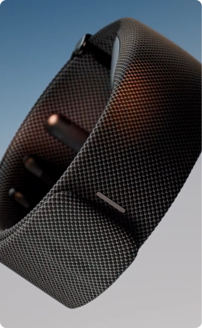
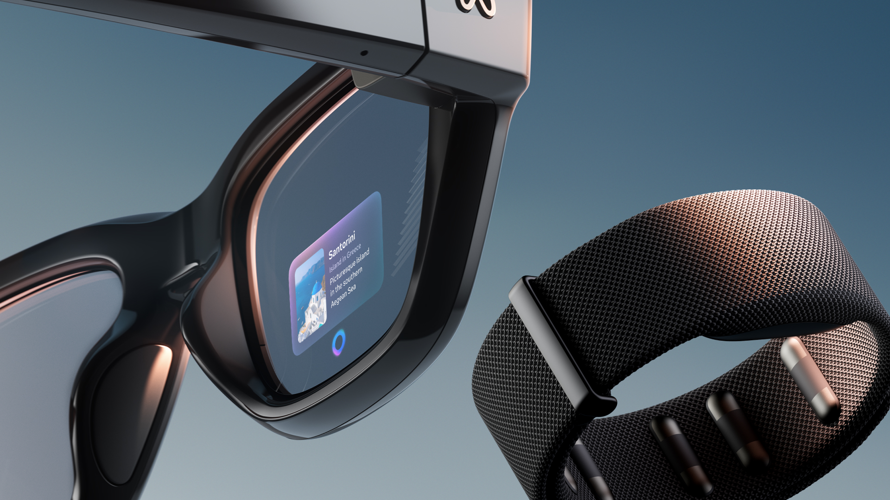
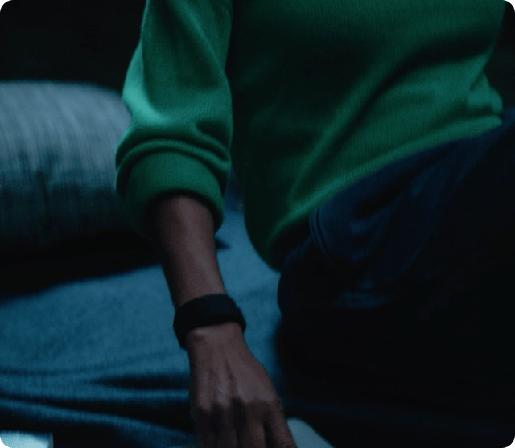
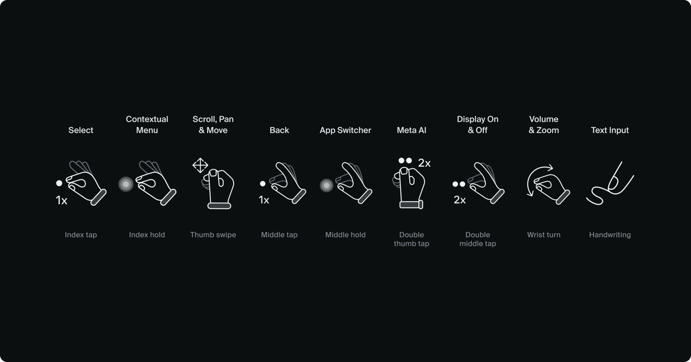

Interacción discreta
Los gestos permiten navegar sin hablar en voz alta. Esto ofrece una alternativa a la voz en espacios compartidos o ruidosos, una de las motivaciones de la investigación de Meta. [3]
NUEVAS FORMAS DE INTERACTUAR
META NEURAL BAND
Una pulsera que transforma pequeños gestos en órdenes digitales. La interacción persona-ordenador da un paso más allá de la pantalla.
Así funciona ↘ Del ratón a la muñeca →
01 / EL DISPOSITIVO
He elegido Meta Neural Band porque cambia una pregunta habitual en IPO: ¿cómo dar una orden sin tener que sujetar un mando o alcanzar una pantalla?
Es un dispositivo de entrada que se coloca en la muñeca y se utiliza con las gafas Meta Ray-Ban Display. Estas muestran la información; la pulsera interpreta gestos para seleccionar opciones, desplazarse por menús o ajustar controles. El conjunto comenzó a venderse en Estados Unidos el 30 de septiembre de 2025. [1]
Su interés para la interacción persona-ordenador (IPO) está en acercar la entrada digital al movimiento de la mano. Lo relevante es la relación entre la acción de la persona, la orden que reconoce el sistema y la respuesta que recibe.
EN EVOLUCIÓN · 2026En marzo de 2026, Meta anunció la ampliación de Neural Handwriting: escribir con el dedo sobre una superficie para responder mensajes. En septiembre documentó nuevas posibilidades de entrada para aplicaciones en las gafas. [7] [8]

02 / CÓMO FUNCIONA
La electromiografía de superficie, o sEMG, registra la actividad eléctrica asociada a los músculos mediante sensores en contacto con la piel. El sistema reconoce patrones y los convierte en instrucciones. [2]
Por ejemplo, juntas el pulgar y el índice o deslizas el pulgar. La acción genera una señal muscular.
Los sensores captan la señal y los modelos de aprendizaje automático la relacionan con una acción digital.
La selección cambia en las gafas y la respuesta háptica de la pulsera puede confirmar el gesto. [2]
La señal se recoge en la muñeca. Es una técnica no invasiva, sin implantes. La actividad registrada es muscular; no se trata de leer pensamientos ni de medir directamente la actividad del cerebro. [3]
03 / SU APORTACIÓN A LA IPO
Los gestos permiten navegar sin hablar en voz alta. Esto ofrece una alternativa a la voz en espacios compartidos o ruidosos, una de las motivaciones de la investigación de Meta. [3]
La señal muscular puede reconocerse aunque la mano quede fuera de la vista de la cámara. Así, algunas acciones pueden hacerse con la mano apoyada o al lado del cuerpo. [2] [9]
La investigación explora cómo aprovechar señales musculares cuando una persona tiene dificultades para realizar movimientos amplios. Su utilidad debe evaluarse en cada caso; la evidencia experimental no garantiza que el producto sea accesible para cualquier discapacidad. [1] [4]

UN EJEMPLO COTIDIANO
Meta describe el desplazamiento del pulgar para navegar por la música y el gesto de pinza acompañado de un giro de muñeca para ajustar el volumen. [1]
Lectura desde la IPO: mi valoración es que esta combinación reduce acciones intermedias, como localizar un control físico. Para que resulte útil, el gesto debe ser fácil de recordar y el sistema debe confirmar que lo ha reconocido.

04 / EVOLUCIÓN
La pulsera se sitúa en dos historias que se cruzan: la búsqueda de entradas más directas y la evolución de los sensores musculares hacia un producto de consumo.
La demostración de Douglas Engelbart mostró el ratón como una forma de controlar información en pantalla. La mano movía un objeto físico para dirigir un cursor. [5]
La presentación del iPhone es un hito de la interacción multitáctil: tocar y deslizar sobre el contenido pasan al centro de la experiencia móvil. La acción sigue vinculada a una superficie. [6]
Tras adquirir CTRL-labs en 2019, Facebook mostró en 2021 su investigación de interacción desde la muñeca. La propuesta era traducir señales neuromusculares en controles para futuras gafas. [3]
El prototipo de gafas Orion integró voz, mirada, seguimiento de manos y una muñequera EMG. Permitía explorar la interacción gestual con el brazo en una postura relajada. [10]
En acciones breves con las gafas, puede asumir funciones de botones, desplazamiento y selección. La siguiente comparación es una valoración de las posibilidades de cada entrada; no implica que la pulsera reemplace todos los usos de esos dispositivos.
| Entrada anterior | Condición habitual | Aportación de la pulsera |
|---|---|---|
| Ratón y mandos | Sujetar y accionar un periférico. | Seleccionar con pequeños gestos de los dedos. |
| Pantalla táctil | Alcanzar y tocar una superficie. | Separar el lugar de la entrada del lugar de la pantalla. |
| Gestos por cámara | La mano debe ser visible para el seguimiento. | Detectar la actividad muscular desde la muñeca. |
| Órdenes de voz | Hablar y disponer de condiciones acústicas adecuadas. | Navegar de forma silenciosa mediante gestos. |
Base de la comparación: investigación EMG de Meta y estudio de interfaces neuromotoras en Nature. [3] [4]
05 / UNA MIRADA CRÍTICA
Hay que aprender un vocabulario de gestos y colocar la pulsera correctamente. Ray-Ban indica que debe quedar ajustada de forma cómoda y en la posición prevista para que los sensores recojan bien las señales. [9] [11]
El producto se presentó como parte del conjunto con Meta Ray-Ban Display. Conviene valorar su utilidad para las tareas y aplicaciones compatibles, además de la necesidad de recargar la batería. [1]
El estudio de 2025 en Nature demostró navegación, reconocimiento de gestos y escritura con sEMG. Sus resultados pertenecen a una plataforma experimental; no son una medida directa del rendimiento de la pulsera comercial en cualquier situación. [4]
Su aportación más interesante es convertir una acción pequeña y cercana al cuerpo en una entrada digital útil. El avance en IPO dependerá de que esa entrada sea comprensible, fiable y cómoda para quien la utiliza.
06 / PARA SEGUIR EXPLORANDO
Redacción y análisis de elaboración propia a partir de documentación del fabricante, investigación científica y fuentes históricas.
Consulta: 8 de noviembre de 2026.
Créditos visuales. Imágenes del dispositivo y demostraciones: Meta. Fotografía de portada y diagrama de gestos: portfolio de Justin Stahl. La imagen de uso es un fotograma del material oficial enlazado en su pie. Las marcas e imágenes pertenecen a sus respectivos titulares. Página académica independiente.